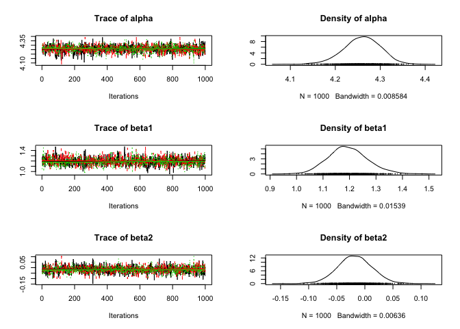
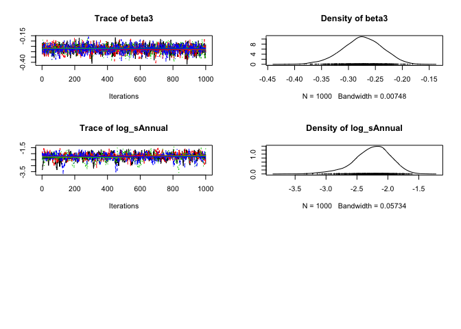
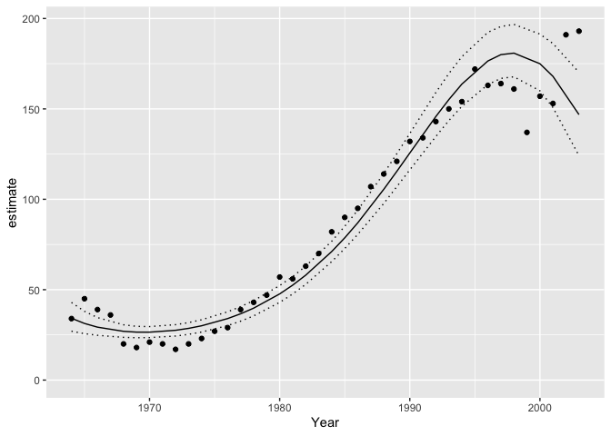

Introduction
smbr (pronounced simber) is an R package to facilitate analyses using STAN. It is part of the embr family of packages.
Demonstration
library(bauw)
library(ggplot2)
library(magrittr)
library(embr)
library(smbr)
# define model in Stan language
model <- model("
data {
int nAnnual;
int nObs;
int Annual[nObs];
int Pairs[nObs];
real Year[nObs];
}
parameters {
vector[nAnnual] bAnnual;
real log_sAnnual;
real alpha;
real beta1;
real beta2;
real beta3;
}
transformed parameters {
real sAnnual;
sAnnual = exp(log_sAnnual);
}
model {
vector[nObs] ePairs;
log_sAnnual ~ normal(0, 10);
bAnnual ~ normal(0, sAnnual);
alpha ~ normal(0, 10);
beta1 ~ normal(0, 10);
beta2 ~ normal(0, 10);
beta3 ~ normal(0, 10);
for (i in 1:nObs) {
ePairs[i] = exp(alpha + beta1 * Year[i] + beta2 * Year[i]^2 +
beta3 * Year[i]^3 + bAnnual[Annual[i]]);
}
target += poisson_lpmf(Pairs | ePairs);
}")
# add R code to calculate derived parameters
model %<>% update_model(new_expr = "
for (i in 1:length(Pairs)) {
prediction[i] <- exp(alpha + beta1 * Year[i] + beta2 * Year[i]^2 +
beta3 * Year[i]^3 + bAnnual[Annual[i]])
}
")
# define data types and center year
model %<>% update_model(
select_data = list(
"Pairs" = integer(), "Year*" = integer(),
Annual = factor()
),
derived = "sAnnual",
random_effects = list(bAnnual = "Annual")
)
data <- bauw::peregrine
data$Annual <- factor(data$Year)
set.seed(42)
# analyse
analysis <- analyse(model, data = data, seed = 3L, glance = FALSE)
# coefficient table
coef(analysis, simplify = TRUE)
#> # A tibble: 5 × 5
#> term estimate lower upper svalue
#> <term> <dbl> <dbl> <dbl> <dbl>
#> 1 alpha 4.26 4.18 4.34 9.97
#> 2 beta1 1.19 1.07 1.36 9.97
#> 3 beta2 -0.0191 -0.0777 0.0393 0.976
#> 4 beta3 -0.272 -0.356 -0.208 9.97
#> 5 log_sAnnual -2.23 -2.87 -1.70 9.97
# trace plots
plot(analysis)
# make predictions by varying year with other predictors including the random effect of Annual held constant
year <- predict(analysis, new_data = "Year")
# plot those predictions
ggplot(data = year, aes(x = Year, y = estimate)) +
geom_point(data = bauw::peregrine, aes(y = Pairs)) +
geom_line() +
geom_line(aes(y = lower), linetype = "dotted") +
geom_line(aes(y = upper), linetype = "dotted") +
expand_limits(y = 0)
Citation
To cite smbr in publications use:
Chris Muir and Joe Thorley (2018) smbr: Analyses Using STAN. doi:
https://doi.org/10.5281/zenodo.1162382.
A BibTeX entry for LaTeX users is
@Misc{,
author = {Chris Muir and Joe Thorley},
year = {2018},
title = {smbr: Analyses Using STAN},
doi = {https://doi.org/10.5281/zenodo.1162382},
}
Please also cite STAN.Code of Conduct
Please note that the smbr project is released with a Contributor Code of Conduct. By contributing to this project, you agree to abide by its terms.